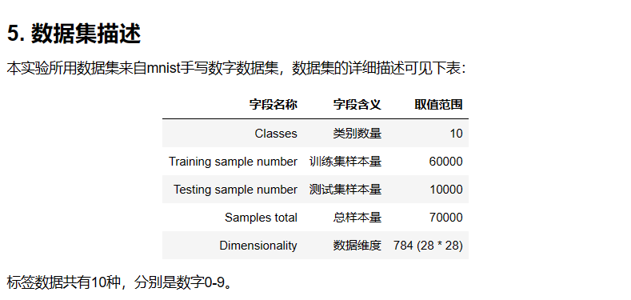

示例代码
1. 实验目标
本实验结合了上一实验学习的 Affine/Softmax-with-loss 层的知识构建两层神经网络实现误差反向传播，并在 mnist 手写数字数据集上对以上算法进行应用。
2. 实验所用 𝑃𝑦𝑡ℎ𝑜𝑛
库名称 版本 简介 𝑃𝑦𝑡ℎ𝑜𝑛 3.6 编程语言 𝑁𝑢𝑚𝑝𝑦 1.19.5 数组运算
3. 实验前导知识
建议您在学习完成下列知识后开始本实验：
python
numpy
4. 实验适用对象
本科学生、研究生
人工智能、算法相关研究者、开发者
大数据与人工智能

步骤 2：多维数组梯度如何实现
我们先来看看基于微分思想下，多维数组的梯度如何实现
与之前实现一维数组求梯度的思路相同，只不过使用 numpy 中 nditer 这个函数
def numerical_gradient(f, x): ## n维数组求梯度
h = 1e-4 # 0.0001
grad = np.zeros_like(x) ## 梯度的形状与x的形状相同
it = np.nditer(x, flags=['multi_index'], op_flags=['readwrite'])
## multi_index将元素索引（0，0）（0，1）等取出来
## readwrite，使用可读可写的格式，我们需要改变x的值来计算f，所以需要可写
while not it.finished:
idx = it.multi_index
tmp_val = x[idx] ## 取出某个元素
x[idx] = float(tmp_val) + h
fxh1 = f(x) # f(x+h)
x[idx] = tmp_val - h
fxh2 = f(x) # f(x-h)
grad[idx] = (fxh1 - fxh2) / (2*h)
x[idx] = tmp_val
it.iternext()
return grad
步骤 3：实现 Affine 层的类
还记得 Affine 类的实现吗
我们在之前的基础上稍作改动
class Affine:
def __init__(self, W, b):
self.W =W
self.b = b
self.x = None
self.original_x_shape = None
self.dW = None
self.db = None
def forward(self, x):
self.original_x_shape = x.shape # 如果x是100*28*28
x = x.reshape(x.shape[0], -1)## 这里的形状变成100*784这种
self.x = x
out = np.dot(self.x, self.W) + self.b
return out
def backward(self, dout):
dx = np.dot(dout, self.W.T)
self.dW = np.dot(self.x.T, dout)
self.db = np.sum(dout, axis=0)
dx = dx.reshape(*self.original_x_shape)
return dx
步骤 4：实现 Softmax-with-loss 类
这里为了有更好的兼容性，再定义类时我们在之前的基础上做一点小小的改动
class SoftmaxWithLoss:
def __init__(self):
self.loss = None
self.y = None # softmax输出
self.t = None # 正确解
def forward(self, x, t):
self.t = t
self.y = softmax(x)
self.loss = cross_entropy_error(self.y, self.t)
return self.loss
def backward(self, dout=1):
batch_size = self.t.shape[0]
if self.t.size == self.y.size:
# 如果是one hot格式
dx = (self.y - self.t) / batch_size
else:
dx = self.y.copy()
dx[np.arange(batch_size), self.t] -= 1
dx = dx / batch_size
return dx
步骤 5：误差反向传播的两层神经网络的实现
我们已经介绍过两层神经网络了
在这里我们定义两种求梯度的方法
一种是使用微分的思想求出梯度
另一中是使用误差反向传播法实现梯度
from collections import OrderedDict
from common.functions import *
from common.layers import *
class TwoLayerNet:
def __init__(self, input_size, hidden_size, output_size, weight_init_std = 0.01):
self.params = {}
self.params['W1'] = weight_init_std * np.random.randn(input_size, hidden_size)
self.params['b1'] = np.zeros(hidden_size)
self.params['W2'] = weight_init_std * np.random.randn(hidden_size, output_size)
self.params['b2'] = np.zeros(output_size)
self.layers = OrderedDict()
self.layers['Affine1'] = Affine(self.params['W1'], self.params['b1'])
self.layers['Relu1'] = Relu()
self.layers['Affine2'] = Affine(self.params['W2'], self.params['b2'])
self.lastLayer = SoftmaxWithLoss()
def predict(self, x):
for layer in self.layers.values():
x = layer.forward(x)
return x
def loss(self, x, t):
y = self.predict(x)
return self.lastLayer.forward(y, t)
def accuracy(self, x, t):
y = self.predict(x)
y = np.argmax(y, axis=1)
if t.ndim != 1 : t = np.argmax(t, axis=1)
accuracy = np.sum(y == t) / float(x.shape[0])
return accuracy
def numerical_gradient(self, x, t):
loss_W = lambda W: self.loss(x, t)
grads = {}
grads['W1'] = numerical_gradient(loss_W, self.params['W1'])
grads['b1'] = numerical_gradient(loss_W, self.params['b1'])
grads['W2'] = numerical_gradient(loss_W, self.params['W2'])
grads['b2'] = numerical_gradient(loss_W, self.params['b2'])
return grads
def gradient(self, x, t):
# forward
self.loss(x, t)
# backward
dout = 1
dout = self.lastLayer.backward(dout)
layers = list(self.layers.values())
layers.reverse()
for layer in layers:
dout = layer.backward(dout)
grads = {}
grads['W1'], grads['b1'] = self.layers['Affine1'].dW, self.layers['Affine1'].db
grads['W2'], grads['b2'] = self.layers['Affine2'].dW, self.layers['Affine2'].db
return grads
其中，微分方法不容易出错，但计算效率较低
误差反向学习法的梯度计算效率高，但是容易出错
我们想要使用误差反向学习法来计算梯度
但是为了避免出错，我们先来用微分法检验一下误差反向学习法计算的梯度是否正确
步骤 6：误差反向学习法的梯度确认
我们选出少量的数据，分别用两种方法计算一下梯度
from dataset.mnist import load_mnist
(x_train, t_train), (x_test, t_test) = load_mnist(normalize=True, one_hot_label=True)
network = TwoLayerNet(input_size=784, hidden_size=50, output_size=10)
x_batch = x_train[:3]
t_batch = t_train[:3]
grad_numerical = network.numerical_gradient(x_batch, t_batch)
grad_backprop = network.gradient(x_batch, t_batch)
for key in grad_numerical.keys():
diff = np.average( np.abs(grad_backprop[key] - grad_numerical[key]) )
print(key + ":" + str(diff))
从结果的比对来看，梯度反向传播法的计算与微分方法的计算差距很小
说明我们的方法是正确的
步骤 7：使用误差反向传播法学习
下面我们就是用 MNIST 数据集进行误差方希那个传播法的学习
(x_train, t_train), (x_test, t_test) = load_mnist(normalize=True, one_hot_label=True)
network = TwoLayerNet(input_size=784, hidden_size=50, output_size=10)
iters_num = 10000
train_size = x_train.shape[0]
batch_size = 100
learning_rate = 0.1
train_loss_list = []
train_acc_list = []
test_acc_list = []
iter_per_epoch = max(train_size / batch_size, 1)
for i in range(iters_num):
batch_mask = np.random.choice(train_size, batch_size)
x_batch = x_train[batch_mask]
t_batch = t_train[batch_mask]
grad = network.gradient(x_batch, t_batch)
for key in ('W1', 'b1', 'W2', 'b2'):
network.params[key] -= learning_rate * grad[key]
loss = network.loss(x_batch, t_batch)
train_loss_list.append(loss)
if i % iter_per_epoch == 0:
train_acc = network.accuracy(x_train, t_train)
test_acc = network.accuracy(x_test, t_test)
train_acc_list.append(train_acc)
test_acc_list.append(test_acc)
print(train_acc, test_acc)
步骤 8：思考与总结
至此我们介绍了 ReLU 层、Softmax-with-Loss 层、Affine 层、Softmax 层等；
这些层中实现了 forward 和 backward 方法，通过将数据正向和反向地传播，可以高效地计算权重参数的梯度；
同时我们将层进行模块化，神经网络中可以自由地组装层，轻松构建出自己喜欢的网络。